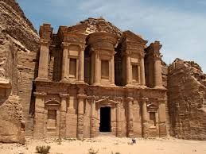
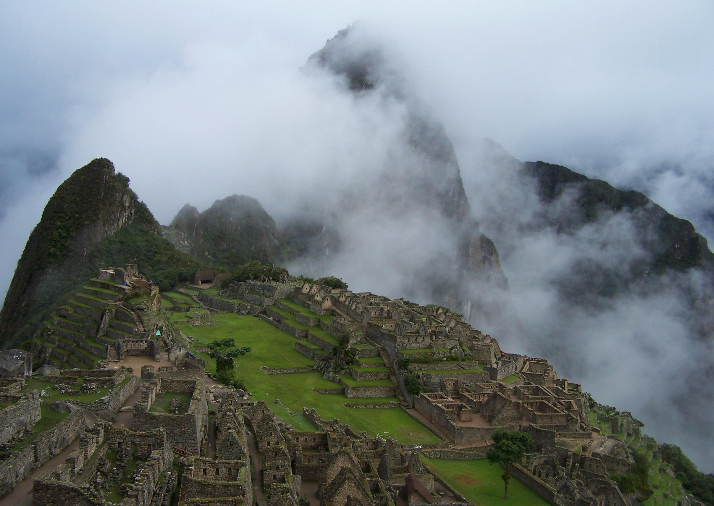

From Ancient Stones to Timeless Legends
A journey through humanity's greatest architectural achievements
Seven Wonders That Shaped the World

🏯 Great Wall of China
An ancient series of fortifications built to protect China's northern borders across centuries.
Learn more

Petra (Jordan)
A breathtaking city carved into rose-red cliffs, once a major trading hub of the ancient world.
Learn moreChrist the Redeemer (Brazil)
A towering statue overlooking Rio de Janeiro, symbolizing peace and unity.
Learn more
Machu Picchu (Peru)
A mysterious Incan citadel nestled high in the Andes, hidden from the world for centuries.
Learn more
Chichén Itzá (Mexico)
A powerful Mayan city known for its astronomical precision and iconic stepped pyramid.
Learn more
Colosseum (Italy)
An immense Roman amphitheater that once hosted gladiatorial games and public spectacles.
Learn more

Icons of Human Ingenuity
Across continents and centuries, these wonders reflect humanity’s limitless imagination
Explore